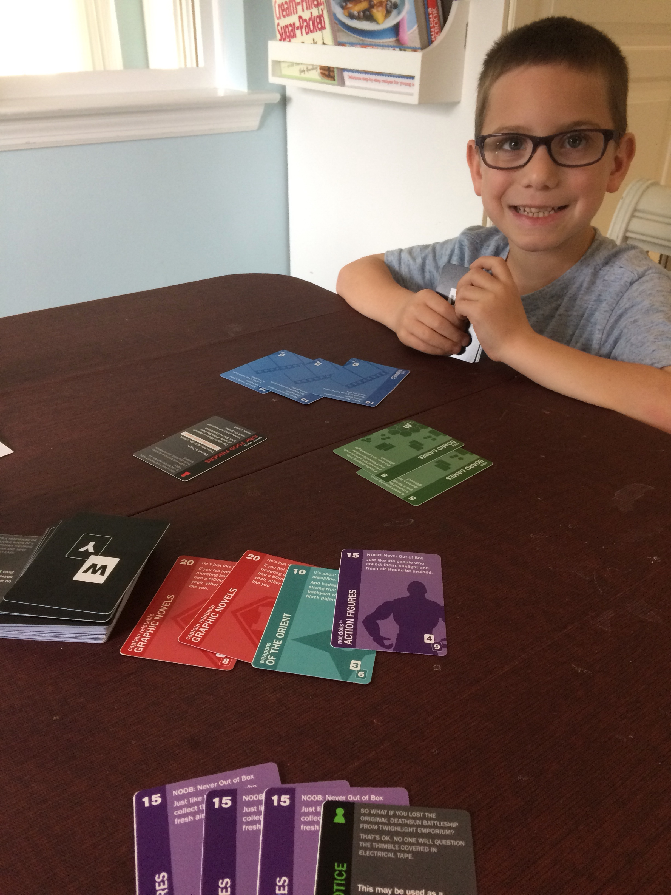

About Us
Double Watt Games is a board game design studio focused on creating games where mechanics and theme work together — not separately. We build around player agency and meaningful decision-making, avoiding the rote play and pure chance that make games feel passive. Every game we design earns its mechanics through its theme, and earns its theme through its mechanics.
